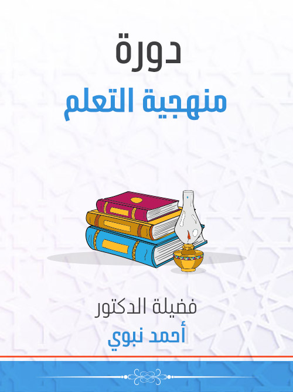

حكم الصلاة بوضوء واحد أكثر من فرض :

من مكروهات الوضوء الوضوء
[1] يكره الامتخاط باليمن عند الاستنشاق .[2] يكره أن يستعين في وضوئه بغيره إلا عند العجز ليكون أعظمَ لثوابه وأخلصَ لعبادته .
[3] يكره إلقاء البُزاق في الماء .
[4] يكره الزيادة على ثلاث في غسل الأعضاء .
[5] يكره الوضوء بالماء المُشَمَّس .
يصلي بوضوء واحدٍ ما شاء من الفرائض والنوافل .
لأنه- صلى الله عليه وسلم- صلى يوم الخندق أربع صلوات بوضوء واحد .
[ [ 1] الطهارة : النظافة عن النجاسة حقيقة كانت وهي الخبث أو حكمية وهي الحدث .
[2] الوضوء : الغسل والمسح في أعضاء مخصوصة .
[3] فرائض الوضوء: ( غسل الوجه ، غسل اليدين مع المرفقين ، مسح ربع الرأس ، غسل الرجلين مع الكعبين ) .
[4] سنن الوضوء: ( غسل اليدين إلى الرسغين ثلاثًا قبل إدخالهما في الإناء لمن استيقظ من نومه، تسميةُ الله تعالى في ابتدائ ه، السواك ، المضمضة ، الاستنشاق ، مسحُ جميع الرأس والأذنين بماء واحد ، تخليل اللحية والأصابع ، تثليث الغسل ) .
[5] مستحبات الوضوء : ( النية ، الترتيب ، التيامُن ، مسح الرقبة ) .
[6] يكره أن يستعين في وضوئه بغيره إلا عند العجز .
[7] يجوز أن يصلي بوضوء واحد ما شاء من الفرائض والنوافل .
[2] الوضوء : الغسل والمسح في أعضاء مخصوصة .
[3] فرائض الوضوء: ( غسل الوجه ، غسل اليدين مع المرفقين ، مسح ربع الرأس ، غسل الرجلين مع الكعبين ) .
[4] سنن الوضوء: ( غسل اليدين إلى الرسغين ثلاثًا قبل إدخالهما في الإناء لمن استيقظ من نومه، تسميةُ الله تعالى في ابتدائ ه، السواك ، المضمضة ، الاستنشاق ، مسحُ جميع الرأس والأذنين بماء واحد ، تخليل اللحية والأصابع ، تثليث الغسل ) .
[5] مستحبات الوضوء : ( النية ، الترتيب ، التيامُن ، مسح الرقبة ) .
[6] يكره أن يستعين في وضوئه بغيره إلا عند العجز .
[7] يجوز أن يصلي بوضوء واحد ما شاء من الفرائض والنوافل .